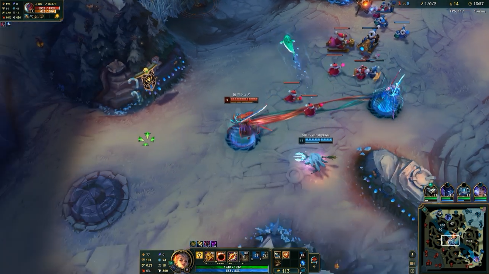
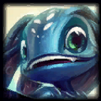
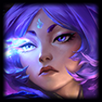
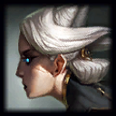
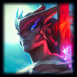

Clasificatoria Solo/Dúo
Franco rumbo a su primer Platino
Oro I · 81 PL · 78 victorias
Fin del directo en
––Horas
:
––Minutos
:
––Segundos
Argentina España peninsular
Participantes de Discord
- Poderosoelquichitin
- Bangkoko
- BRASOM
- German
- Marquitos
- MMatatabi
- Diavolo
- Jockie Music
- Jose
- La nutria guitarrista
Primera partida por el ascenso a Platino
En juego · Última actualización al minuto 13:57
Rivales 3 – 8 Equipo de Franco
Franco lleva cinco bajas de ventaja con su equipo. Si gana esta partida, llega a Platino.
BrasomLAN juega con Leona: nivel 8, una baja, cero muertes y dos asistencias.

Ampliar la captura del minuto 13:57 ↗Marcador y estadísticas anteriores · Minuto 04:18
Al minuto 04:18, Leona estaba en nivel 4, con una baja, cero muertes, una asistencia y 962 de oro disponible.
 Ampliar la captura de la partida ↗
Ampliar la captura de la partida ↗
| Campeón | Nivel | B/M/A | CS |
|---|---|---|---|
| 5 | 0/0/0 | 33 | |
| 4 | 1/0/1 | 29 | |
 FizzMedio | 5 | 1/0/0 | 36 |
 YunaraInferior | 3 | 0/1/0 | 24 |
| 4 | 1/0/1 | 2 |
| Campeón | Nivel | B/M/A | CS |
|---|---|---|---|
 CamilleSuperior | 5 | 0/0/0 | 27 |
| 3 | 0/2/0 | 16 | |
 YoneMedio | 5 | 0/0/0 | 24 |
| 4 | 1/0/0 | 30 | |
| 3 | 0/1/1 | 4 |
B/M/A indica bajas, muertes y asistencias. CS cuenta los súbditos y monstruos de la jungla.